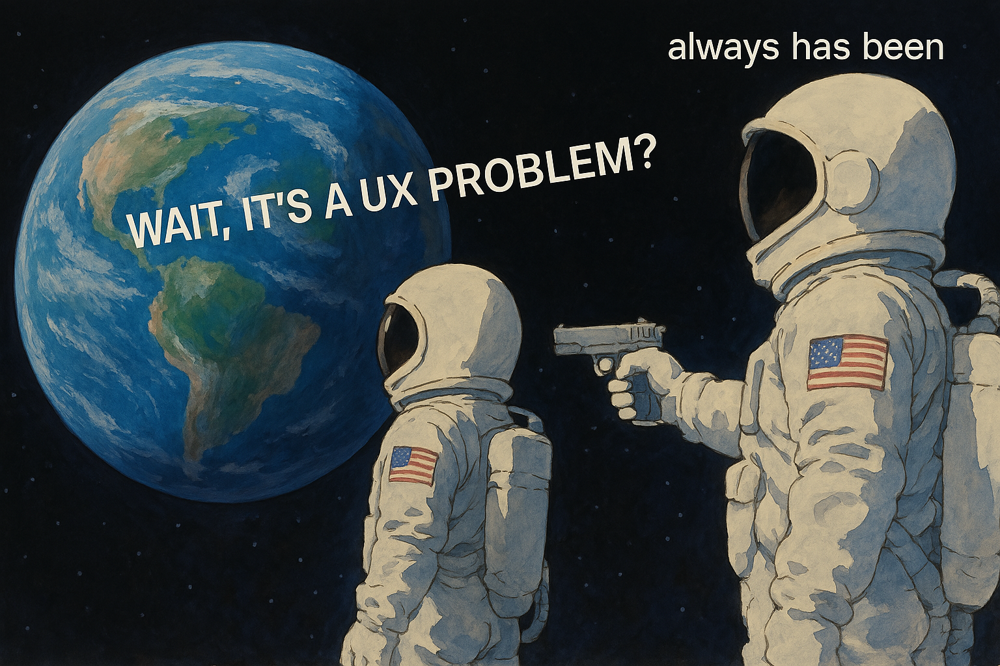

We have plenty of intelligence. The problem is making it usable
Apr 2025
Toby Lütke, CEO of Shopify, just made the rounds on Twitter with an internal memo that he sent to his company. In it, he basically tells all of his employees that the time to mass adopt AI in their business is now. No matter which job or role you're in, you need to be using AI all the time, every day, or risk damaging your performance review. If you haven't seen it, read it for yourself here:
This echoes what I've heard from other CEOs in and around tech — they recognize the usefulness and productivity gains on offer from AI tools like ChatGPT and Claude. But for some reason, that isn't enough for their employees to actually adopt them at scale. They have to be threatened with bad reviews.
The AI tools that seem to spread by themselves within workforces are things like Cursor for interactive coding and Granola for automated note-taking. These tools are casually dismissed as "GPT wrappers" by some industry commentators — after all, ChatGPT (or Sonnet or Gemini or Llama or Deepseek) is doing all the "real work", right?
People who take this perspective seem to be throwing away all the lessons we've learned about software distribution. It's like they saw Instagram and waived it off as an "ImageMagick wrapper"... or Dropbox as an "rsync wrapper".
Those products won because they made powerful, highly technical tools accessible through thoughtful design. The biggest barrier to mass AI adoption is not capability or intelligence; we have those in spades. It's UX.

The internet recently went wild using ChatGPT's image generation capabilities to create Studio Ghibli-inspired versions of favorite family photos and memes. They did this because Twitter user @GrantSlatton promoted the idea and the prompt was fairly easy to replicate. Everyone could have done this on their own, but they didn't. A tool with infinite flexibility, no matter how powerful, is inaccessible to a general audience.
It took the commercialization of the graphical user interface for traditional computing to move beyond a technical audience. With AI, we're still in our command-line phase.
The magic of something like Cursor is that there's a workflow which is heavily orchestrated to help users utilize the power that LLMs can provide. Sure — at its core, there's a series of prompts and calls to base models that generates the code... but this is marshaled through a UI that keeps users continuously flowing through the prompt > generate > eval > test loop.
At the end of the day, AIs are still computers, and they're providing value to humans. So all the lessons of human-computer interaction we've learned over the years continue to apply. The constraints and capabilities have evolved, but the principles are the same.
We're still barely scratching the surface. For all of its success, tools like Cursor are still built for a highly technical audience. AI adoption won't come from more powerful models or CEO mandates — it will come from thoughtfully designed interfaces that make intelligence accessible to everyone.
© Nan Yu – 2025